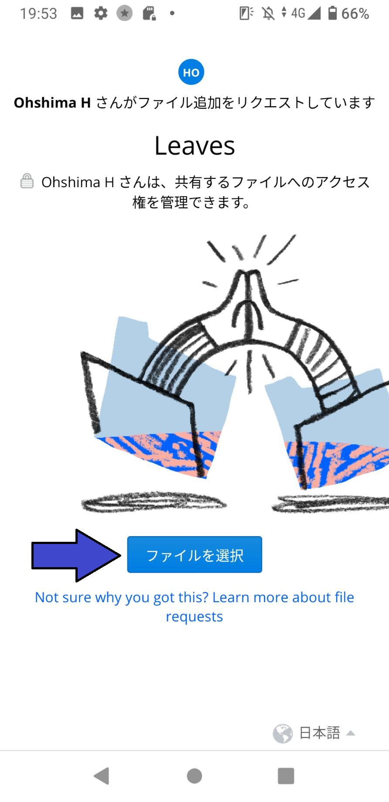
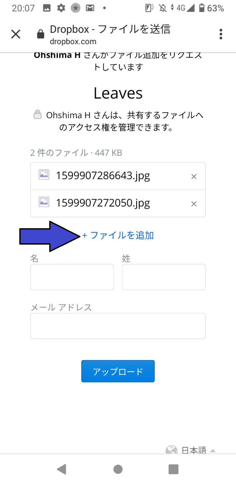
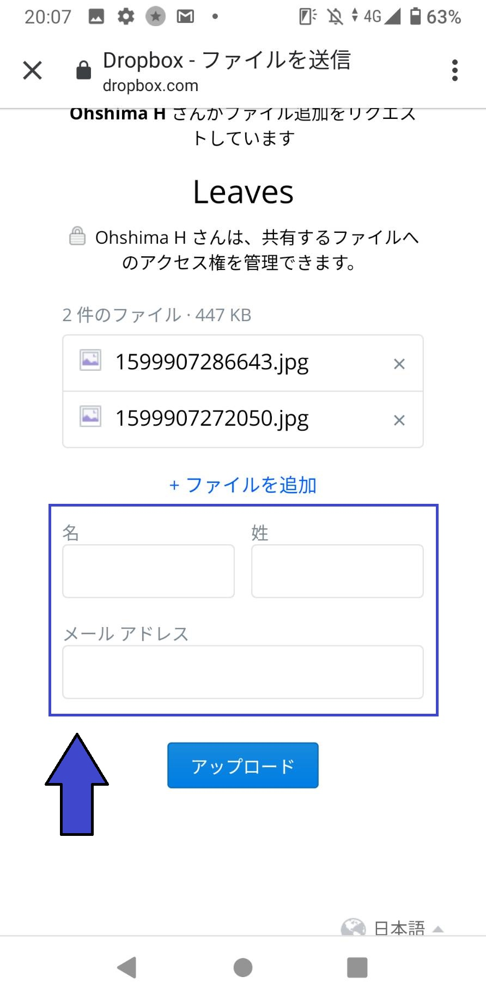
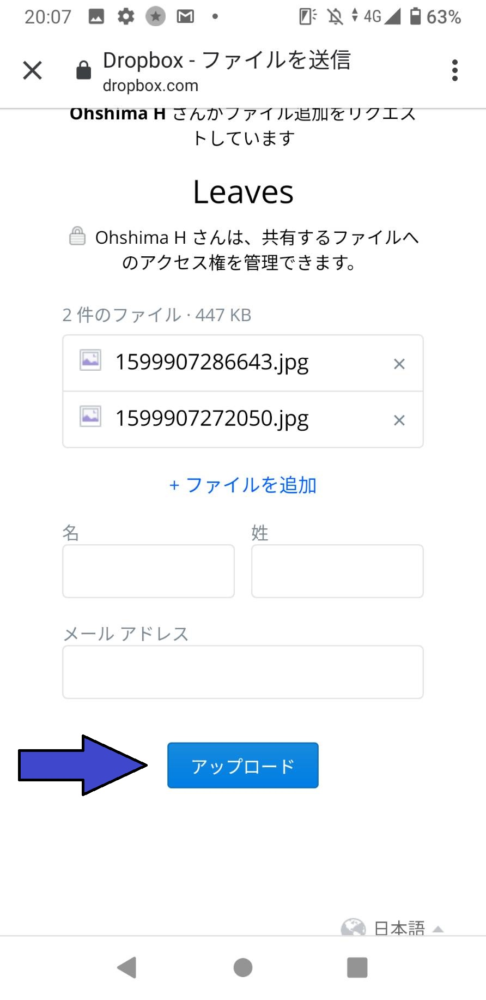
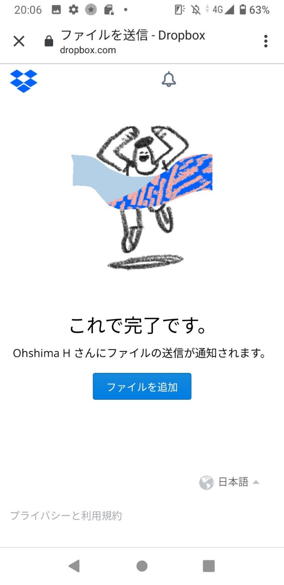
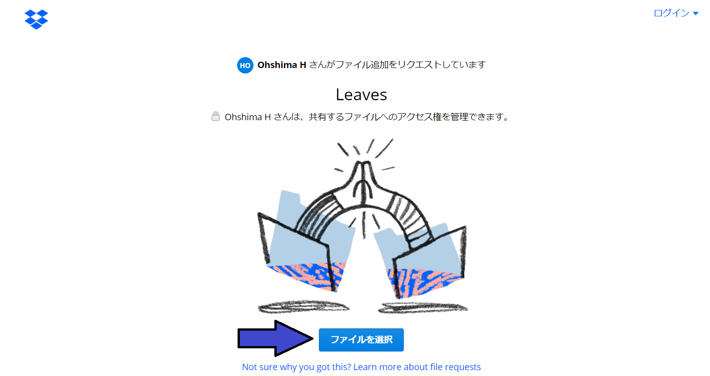
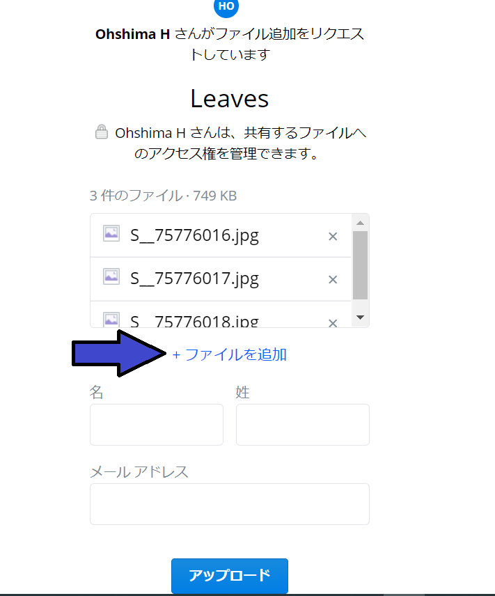
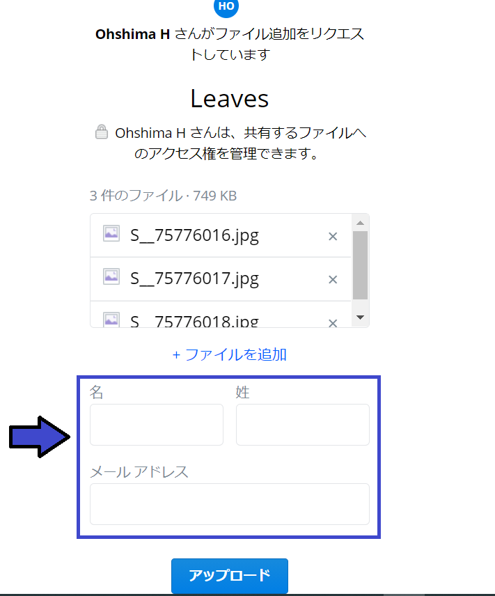
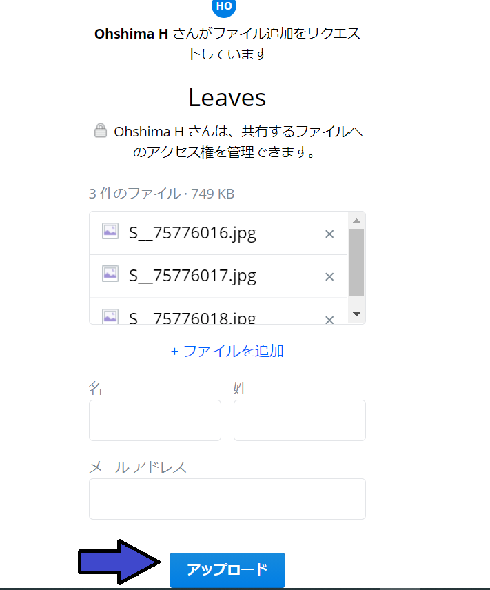
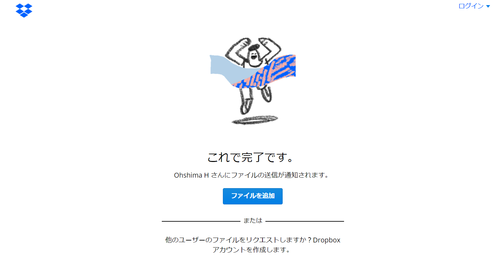

Dropboxファイルリクエストへのアップロード方法
スマートフォンからアップロードする場合
Step 1
上記のURLをクリックすると、以下のようなページになります。このページの「ファイルを選択」をクリックしてください。
Step 2
ファイルを選択すると、以下のような画面になります。ファイルを追加されたい場合は、「ファイルを追加」をクリックし、同じようにファイルを選択してください。
Step 3
22枚（樹木全体の画像1枚、種類を判別する根拠となった画像1枚、葉っぱの画像20枚）の画像を選択されたら、「名」、「姓」、「メールアドレス」を入力してください。
このときの「名」と「姓」には、Lancersで設定されているアカウント名を入力してください。
Step 4
Step1～Step3までを完了されたら、「アップロード」をクリックしてください。
Step 5
アップロードが完了したら、以下のような画面になります。これで作業は終了となります。
パソコンからアップロードする場合
Step 1
上記のURLをクリックすると、以下のようなページになります。このページの「ファイルを選択」をクリックしてください。
Step 2
ファイルを選択すると、以下のような画面になります。ファイルを追加されたい場合は、「ファイルを追加」をクリックし、同じようにファイルを選択してください。
Step 3
22枚（樹木全体の画像1枚、種類を判別する根拠となった画像1枚、葉っぱの画像20枚）の画像を選択されたら、「名」、「姓」、「メールアドレス」を入力してください。
このときの「名」と「姓」には、Lancersで設定されているアカウント名を入力してください。
Step 4
Step1～Step3までを完了されたら、「アップロード」をクリックしてください。
Step 5
アップロードが完了したら、以下のような画面になります。これで作業は終了となります。
